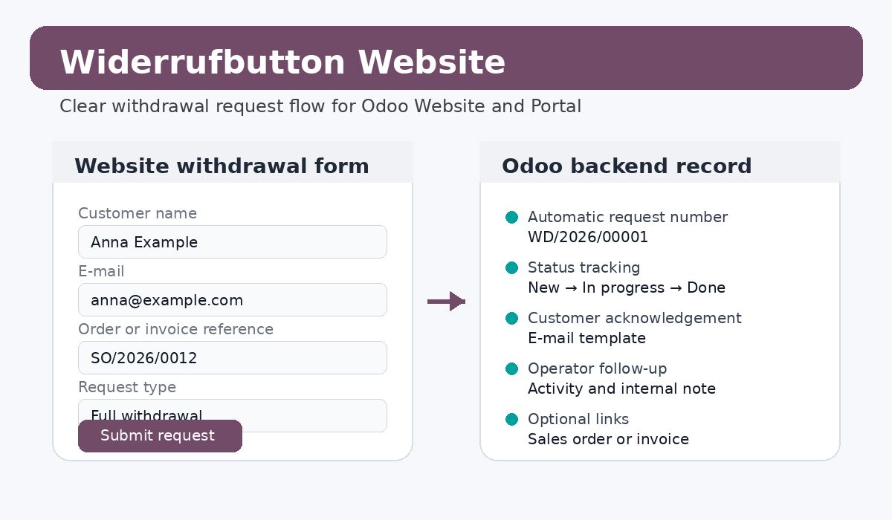

Add a clear withdrawal entry point to your Odoo website and manage incoming withdrawal requests directly in Odoo.
/widerruf and /vertrag-widerrufen.
odoo_widerrufbutton_sale links requests with sales orders.odoo_widerrufbutton_account links requests with invoices.This module is a technical implementation aid for withdrawal workflows. It does not provide legal advice. All wording, button labels, deadlines and process logic must be reviewed by qualified legal counsel before production use.